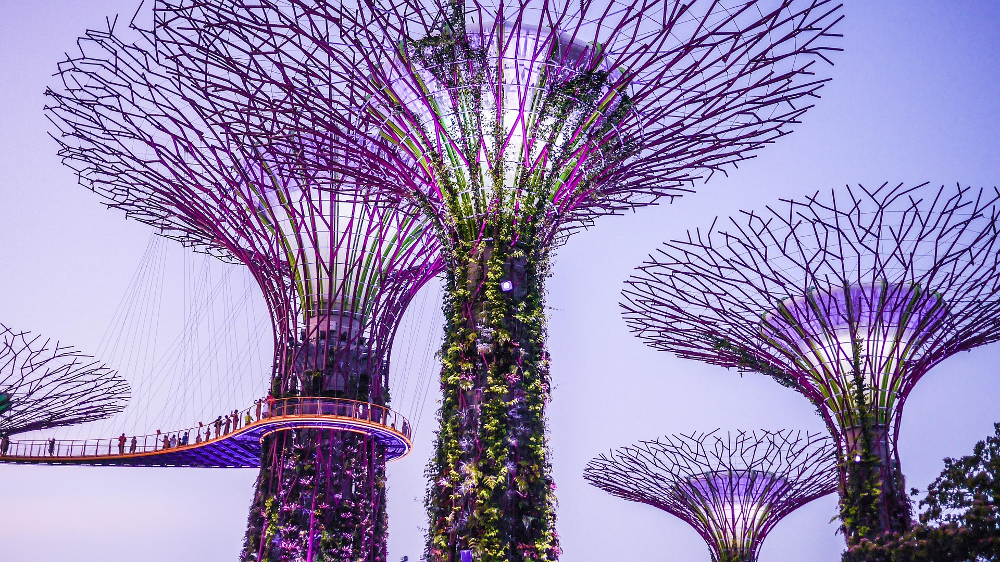
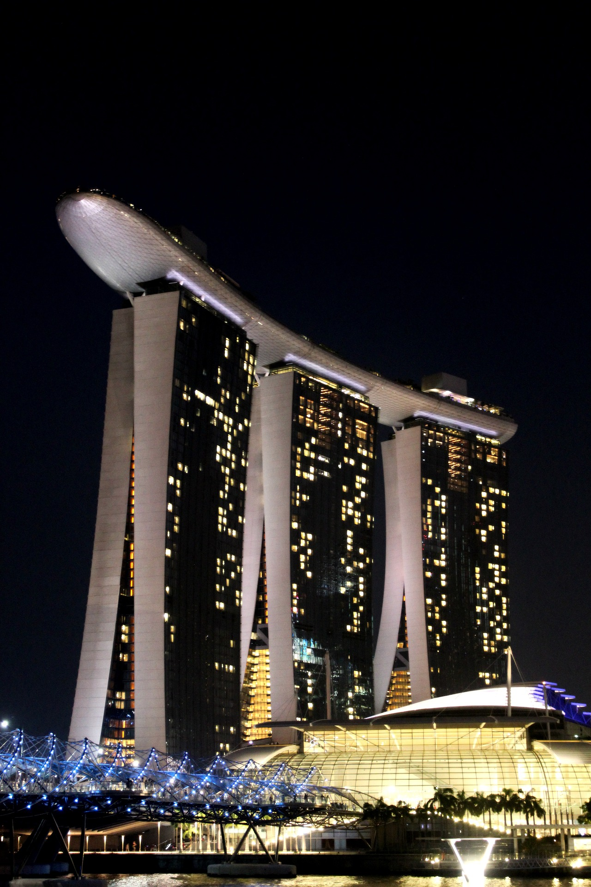

카드리뷰



싱가포르
싱가포르 여행은 2020년 2월에 다녀왔습니다. 싱가포르는 동남아시아에 위치한 도시국가로, 다양한 문화와 현대적인 건축물, 맛있는 음식으로 유명합니다.
여행 중에는 마리나 베이 샌즈, 가든스 바이 더 베이, 센토사 섬 등을 방문하며 즐거운 시간을 보냈습니다.
카드리뷰


싱가포르
싱가포르 여행은 2020년 2월에 다녀왔습니다. 싱가포르는 동남아시아에 위치한 도시국가로, 다양한 문화와 현대적인 건축물, 맛있는 음식으로 유명합니다.
여행 중에는 마리나 베이 샌즈, 가든스 바이 더 베이, 센토사 섬 등을 방문하며 즐거운 시간을 보냈습니다.
휴대폰을 잃어버려 관련 사진과 영상이 없는 관계로 들어간 사진과 영상은 저작권문제가 없는 것들로 대체했습니다.
최대한 관련 있는 것들로 넣으려 했지만 비디오는 관련 없는 영상으로 대체했습니다.